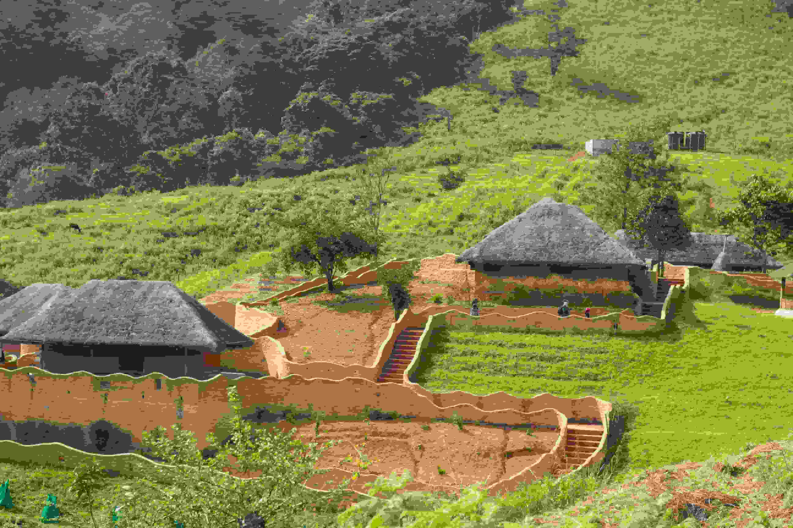
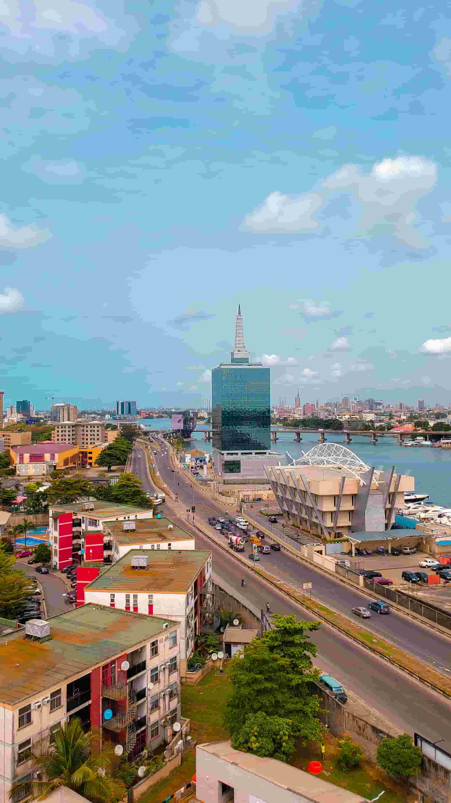
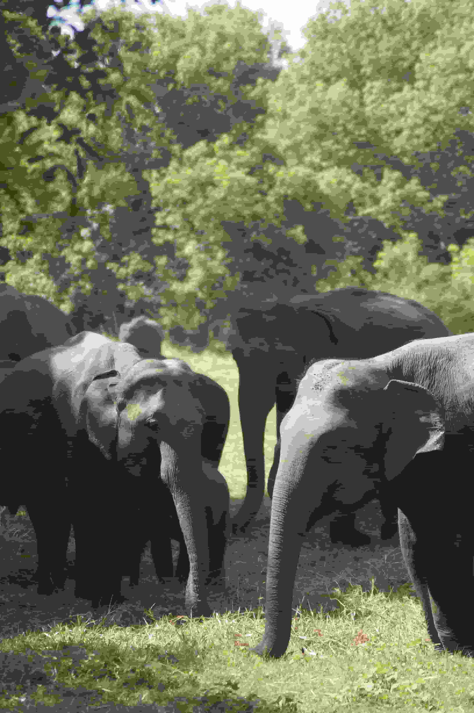

Obudu Mountain Resort
Experience breathtaking mountain scenery, cool weather, and Africa's longest cable car.

Discover breathtaking destinations, vibrant festivals, diverse wildlife, and the rich cultural heritage that make Nigeria one of Africa's most fascinating countries.
Explore AttractionsNigeria is home to hundreds of ethnic groups, spectacular landscapes, historic landmarks, beautiful waterfalls, wildlife reserves, mountain resorts, beaches, and lively cultural celebrations. Whether you enjoy adventure, history, nature, or local cuisine, Nigeria offers unforgettable travel experiences.

Experience breathtaking mountain scenery, cool weather, and Africa's longest cable car.
One of Nigeria's most famous historical landmarks, offering caves, ancient shelters, and panoramic views.

Nigeria's largest wildlife reserve, known for elephants, natural springs, and safari adventures.
Nigeria celebrates hundreds of traditional festivals every year. Visitors can experience colorful masquerades, music, dance, royal ceremonies, and delicious local cuisines across different regions.
No favorite destination has been saved yet.